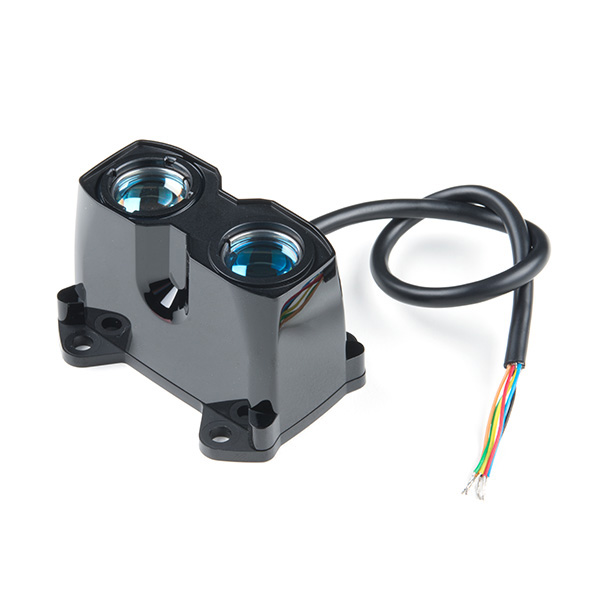
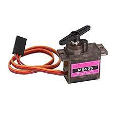
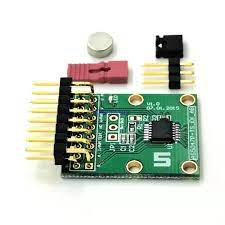

Introduction
The purpose of this sensor driver module is to develop the low level data transfer drivers for Servo Motor, LiDAR and Magnetic Rotary Encoder. Moreover, also want to different working modes, namely Range At Angle and Constant Panning. Explore the other sections to get more insights in the project.

Raspberry Pi Pico
Raspberry Pi Pico is a small, fast and versatile microcontroller board with large number of GPIO pins. The board is based on a RP2040 microcontroller.
LiDAR

LiDAR is one of the major component of self-driving cars. LiDAR works as a sensor and used to measure a distance with very high speed and accuracy.
Servo Motor

In our project, motor can be used to rotate a sensor module. This sensor module is comprise of LiDAR and rotary encoder. One of the benefits of using a servo motor is one always know at what position it is in. It got feedback mechanism built inside.
Magnetic Rotary Encoder

Encoder is a sensing device and converts motion to an electrical signal that can be used as feedback mechanism. Rotary Encoder is used to convert rotational motion into electrical signals that can be used to detect position and speed of rotating bodies. Magnetic Rotary Encoder uses hall effect of magnetic field and senses angle and speed of the rotating part.
MAVLink
MAVLink stand for Micro Air Vehicle Message Marshalling Library. MAVLink is a very lightweight, header-only message library for communication between drones and/or ground control stations.

Changing the driving modes
Aenean ornare velit lacus, ac varius enim lorem ullamcorper dolore. Proin aliquam facilisis ante interdum. Sed nulla amet lorem feugiat tempus aliquam.

Description of different modes
Aenean ornare velit lacus, ac varius enim lorem ullamcorper dolore. Proin aliquam facilisis ante interdum. Sed nulla amet lorem feugiat tempus aliquam.